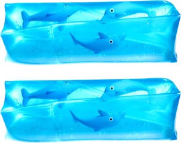

Presenter: Christopher Stoll
Abstract: Humans like to think of themselves as solid, sealed, self-contained beings. But biology says otherwise. In this inebriated exploration of gastrointestinal geometry, we’ll confront the horrifying truth: your stomach is actually outside your body. The digestive tract, from mouth to anus, is not inside you, but rather a continuous external tunnel running through you. You’re not a meat puppet that happens to have a gut. You’re a donut with depression.
Fun fun fun. This lecture proposes that the human body is less a sealed organism and more a confused biological torus. A wet, muscular tube bent into pretzel form. Through a mix of legitimate anatomy, questionable logic, and half-remembered biology, we’ll examine how evolution accidentally made every animal a walking water wiggler toy:

slippery, leaky, and full of alien microbes.
By the end of this talk, attendees will: